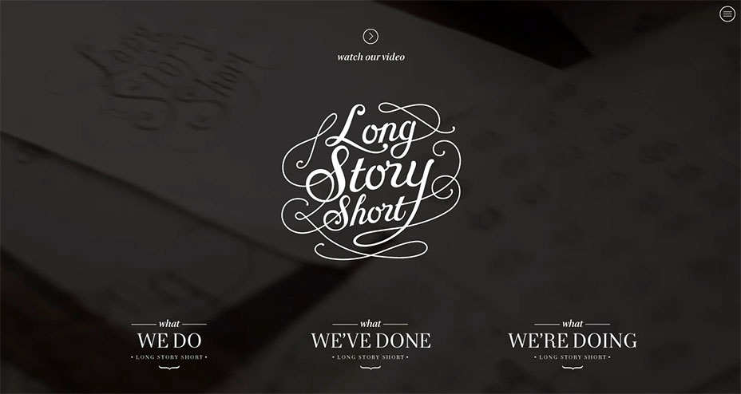

I recently graduated from a Front-End Web Development course at General Assembly where I learned HTML, CSS, JavaScript, and jQuery and how to be an awesome Front-End Web Developer! I am very proud to be the first red panda to complete a certificate at General Assembly's San Francisco campus.
Deveopled multi-national brand focused on millenial interconnectivity.
Used a design team's wireframes to develop this company's responsive homepage.
Built web app prototype that allows users to store and quickly retrieve photos using keywords.